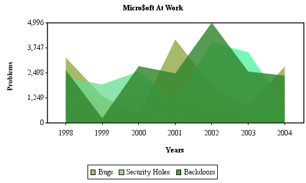
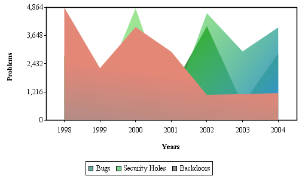
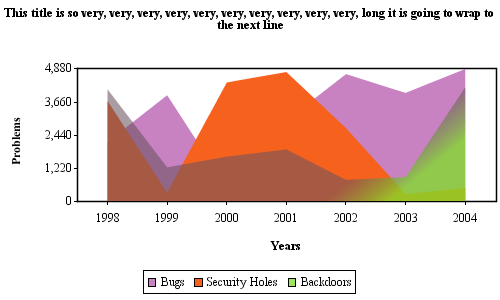
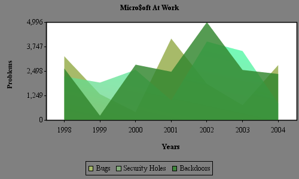
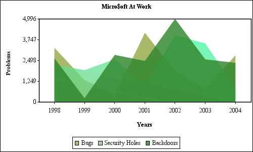
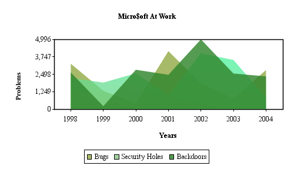

| For many of the 'general' examples, I will simply use an Area Chart. Please be aware the following chart features are the same across all chart types. |
| Exporting Images |
|
jCharts exports to the following formats: PNG, JPEG, and SVG, via encoder objects located in the
org.jCharts.encoders package. Each of these encoders has a couple of methods
to encode you charts. encode( Chart chart, OutputStream outputStream ) - a more generic version so you can pass any implementation of OutputStream through this method, such as ServletOutputStream or FileOutputStream. PNG and JPEG support is provided through the JSDK 1.4. In other words, you need the JSDK 1.4 to use the provided jCharts image encoders. However, there is now a JPEGEncoder13 class for legacy support of older jdks SVG support is provided via the Apache XML project: Batik. Please visit: http://xml.apache.org/batik/ |
| PNGEncoder.encode( axisChart, outputStream ); |
|  |
| Exporting Images From Servlets |
|
There has been a helper Class, org.jCharts.encoders.ServletEncoderHelper, added for exporting charts from Servlets and JSP's. There
are methods on this class to export to any of the jCharts supported formats, with the added benefit of automatically setting the MIME type
of the chart for your browser so that the browser knows how to render the image correctly. I don't know about you, but I always had trouble remembering the MIME types for different file formats. |
| Charts Without Running an X Server |
|
The JSDK 1.4 allows jCharts to run on a headless *nix box without a virtual frame buffer! Set the follow property may be specified at the java command line:
-Djava.awt.headless=true or a less flexible placement in your code: System.setProperty("java.awt.headless","true");
Otherwise, if you are running pre JDK 1.4, you will have to use a virtual frame buffer, like: xvfb. |
| Chart Title |
|
You can display a title on your charts via an argument to the DataSeries and PieChartDataSet Constructors. If you
pass NULL, no title will be shown. There are Font and Paint attributes for the chart title on the
ChartProperties Object.
|
| DataSeries dataSeries = new DataSeries( xAxisLabels, xAxisTitle, yAxisTitle, null ); |
|  |
|
If your chart title is really long, it will wrap to the next line as in: |
|  |
| Background Paints |
|
The background of all chart types use the java.awt.Paint Interface to
control its appearance. There are several implementations of the java.awt.Paint Interface
in the java.awt Package to choose from.
The default background Paint is: java.awt.Color.white for all chart types. To change this, use the setBackgroundPaint( java.awt.Paint ) method on the ChartProperties Object. |
| chartProperties.setBackgroundPaint( Color.gray ); |
|  |
| Chart Border |
|
No border is drawn around the charts by default. If you would like to create a border around your chart,
set the ChartStroke Object on the ChartProperties Object. By deafault the border will be black, but this is also
configurable.
|
|
ChartStroke borderStroke= new ChartStroke( new BasicStroke( 1.0f ), Color.black ); chartProperties.setBorderStroke( borderStroke ); |
|
** OR ** You can use the static default instance of ChartStroke for chart outlines. |
| chartProperties.setBorderStroke( ChartStroke.DEFAULT_CHART_OUTLINE ); |
|  |
| Edge Padding |
|
All charts by default have a border of 5 pixels surrounding the image. This is configurable by
using a method on the ChartProperties Object.
|
| chartProperties.setEdgePadding( 20f ); |
|  |